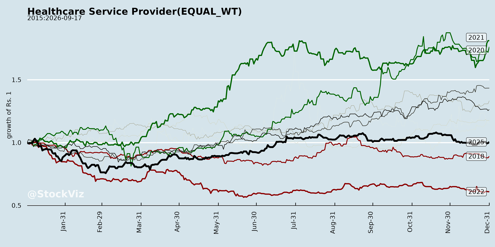
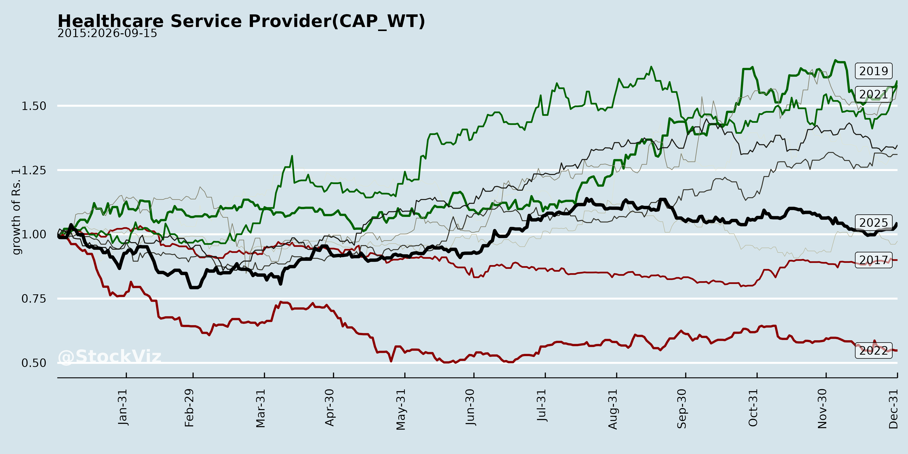
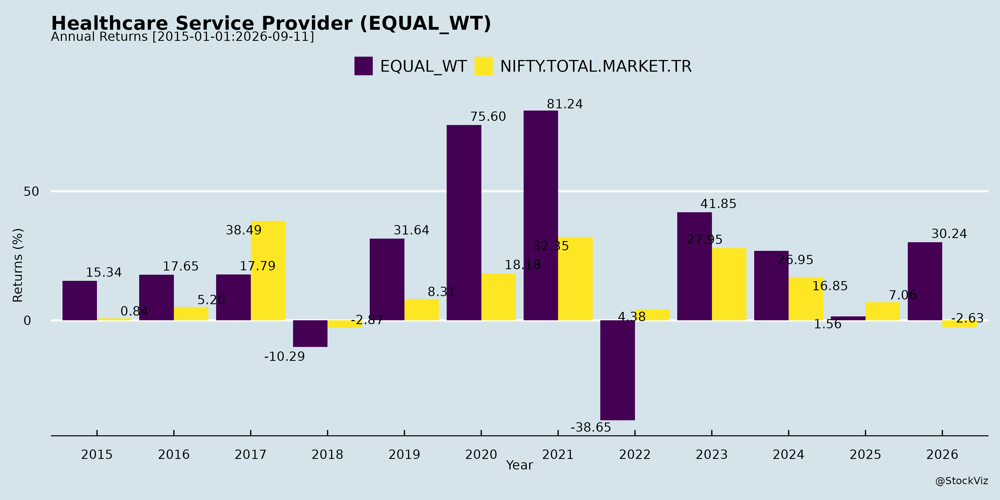
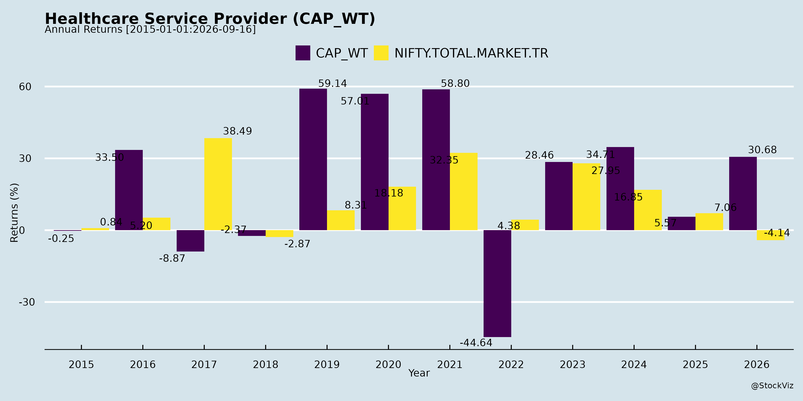
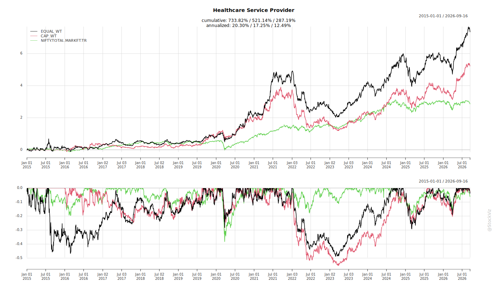
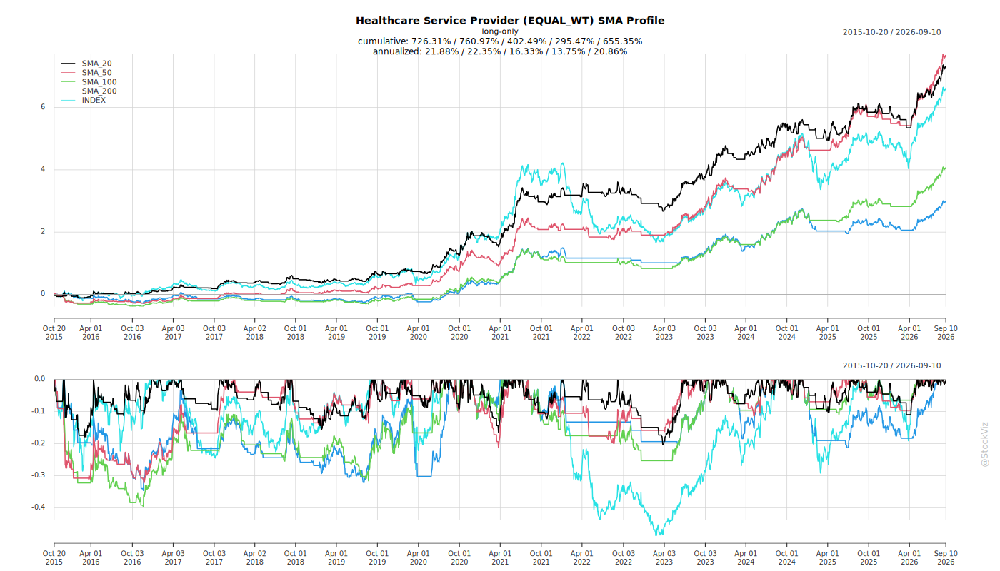
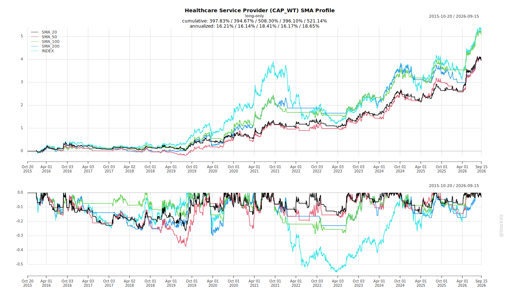
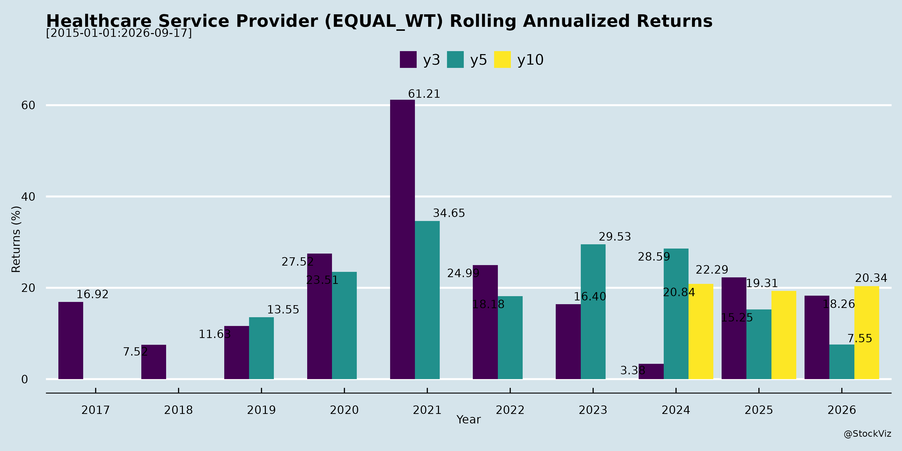
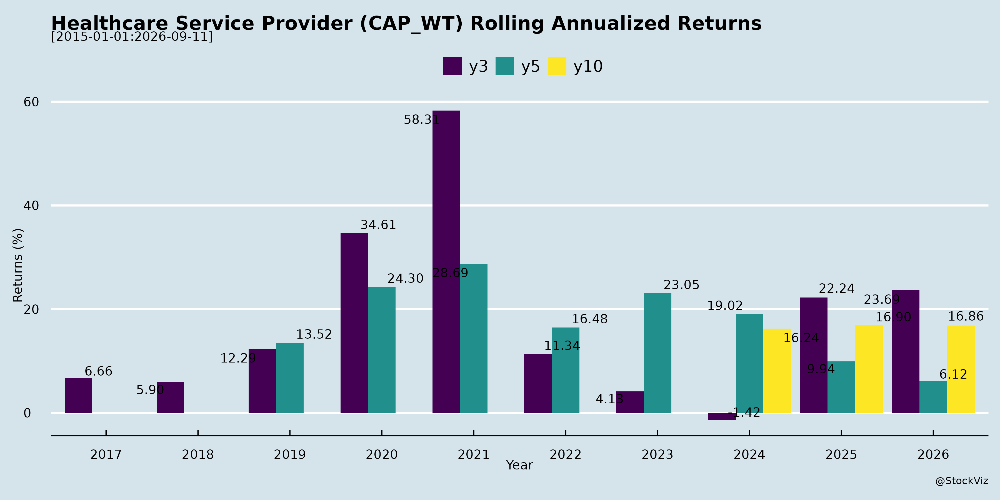

Annual Returns




Cumulative Returns and Drawdowns

SMA Scenarios


Current Distance from SMA
Rolling Returns


EBIT (% of Industry Total)
Revenue (% of Industry Total)
AI Summaries
General
asof: 2025-11-29
Analysis of Indian Healthcare Service Providers (Diagnostics Sector)
Based on the provided announcements from key players (Krsnaa Diagnostics, Dr Lal PathLabs, Metropolis Healthcare, Sastasundar Ventures, Suraksha Diagnostics, Thyrocare Technologies, Vijaya Diagnostic Centre), the sector shows routine compliance and governance activities with limited operational insights. Diagnostics remains resilient amid rising health awareness, but announcements highlight minor financial pressures and stake changes. Below is a structured analysis:
Tailwinds (Positive Factors)
- Strong Subsidiary Capital Management: Sastasundar Ventures’ material subsidiary (SHBL) completed a buyback of ~20L shares (8.55% stake) from Mitsubishi for ~₹100 Cr at ₹493/share (Sep-Nov 2025). Parent’s stake rose from 72.14% to 78.89%, enhancing control without cash outflow. Signals financial health and confidence in SHBL’s wholesale pharma/OTC business (FY25 turnover: ₹1,085 Cr).
- Governance Stability: Approvals for director continuity (Krsnaa: Mr. Chetan Desai post-75 tenure till Apr 2026) and clarifications on AGM resolutions (Suraksha: single resolution for director re-appointments) reflect proactive compliance and board stability.
- Routine Investor Engagement: Vijaya’s IEPFA “Saksham Niveshak” campaign for unclaimed dividends shows focus on shareholder welfare, aiding retention.
Headwinds (Negative Factors)
- Tax Litigation Pressures: Dr Lal PathLabs received a FY18 reassessment order (Oct 29, 2025) with ₹2.79 Cr additions/disallowances and ₹2.43 Cr tax demand. Though small (~0.01-0.02% of typical annual revenue), it adds to ongoing disputes; company plans appeal, but could tie up resources.
- Promoter Stake Dilution: Thyrocare’s promoter (Docon) sold 10% stake (53.3L shares) for ₹668 Cr at ~₹1,252/share (Oct 24, 2025), reducing group holding to 60.93% from 70.98%. May signal liquidity needs or reduced promoter commitment.
- Minor Disruptions: Metropolis cancelled an analyst meet (Nov 2025) due to “exigencies,” potentially delaying investor visibility.
Growth Prospects
- Moderate to Stable: No direct revenue/growth data, but SHBL’s buyback (post strong FY24 turnover of ₹1,352 Cr) amid consistent pharma wholesale growth (FY22-25: ₹1,026 Cr to ₹1,085 Cr) suggests sector tailwinds from rising OTC/medicinal demand. Parent-level actions (e.g., Sastasundar stake increase) position for inorganic consolidation.
- Sector-Wide Upside: Routine disclosures indicate operational continuity; diagnostics benefits from preventive health trends, but lacks aggressive expansion signals here. Potential for 10-15% CAGR if health infra investments continue (inferred from financial maneuvers).
Key Risks
| Regulatory/Tax |
Tax demands (Dr Lal: ₹2.43 Cr) and appeals could escalate; IEPFA compliance (Vijaya) risks share transfers if unclaimed dividends persist. |
Medium (financial drag if unresolved) |
| Promoter/Governance |
Stake sales (Thyrocare: 10% reduction) may erode confidence; director age/tenure issues (Krsnaa) need ongoing approvals. |
Low-Medium (watch for further sales) |
| Operational |
Event cancellations (Metropolis) hint at unforeseen issues; trading window closures (Sastasundar) limit liquidity. |
Low (routine) |
| Sectoral |
No material impact noted (Dr Lal), but broader risks like competition, pricing pressure, or forex (if imports) unaddressed. |
Low (based on docs) |
Overall Summary
The diagnostics sector faces mild headwinds from tax disputes and promoter stake sales, offset by tailwinds like subsidiary buybacks and governance stability. Growth prospects are steady (driven by pharma wholesale and health demand), but not explosive per these filings. Key risks center on litigation and ownership changes, with no systemic red flags. Investors should monitor appeals/outcomes; sector remains defensive with low beta. Positive: Consolidation signals; Neutral: Compliance-heavy disclosures. (Data as of Nov 2025 filings.)
Investor
asof: 2025-11-29
Summary Analysis: Indian Healthcare Service Providers (Diagnostics & Pharma Distribution)
The provided documents primarily cover diagnostics firms (Thyrocare, Suraksha Diagnostics) and pharma/healthcare platforms (Sastasundar Ventures), with ancillary announcements from peers (Krsnaa, Dr Lal PathLabs, Metropolis, Vijaya). These reflect Q2/H1 FY26 performance amid expansion, operational tweaks, and external challenges. Below is a structured analysis of headwinds, tailwinds, growth prospects, and key risks for the sector.
Tailwinds
- Strong Volume & Revenue Momentum: 15-24% YoY revenue growth (e.g., Thyrocare 22%, Suraksha 17%, Sastasundar 17%). Driven by patient/test volumes (Thyrocare +21%, Suraksha tests +25%) and packages/wellness (Aarogyam/Jaanch up 19-31%).
- Operational Efficiencies & Margin Expansion: Mature centers/labs at 37-38% EBITDA (Suraksha); Thyrocare normalized EBITDA +49% to 35%; gross margins up 100bps via automation, procurement, and mix (e.g., Thyrocare 72%). Bad debt recovery and pay-for-performance aiding franchisee motivation.
- Network & Franchise Scaling: Thyrocare at 10k+ active franchisees (+20% YoY); Suraksha adding 12-15 centers; Sastasundar targeting 55k retailers by FY26 end.
- Tech/Digital Adoption: AI/automation in warehouses (Sastasundar), Six Sigma quality (Thyrocare), genomics/prenatal (Suraksha), apps/podcasts (Sastasundar). Online partnerships (PharmEasy +46%) boosting B2B/B2C.
- Capital Strength: Debt-free (Thyrocare net cash ₹190cr), treasury-funded growth (Sastasundar ₹565cr), bonuses/dividends signaling confidence.
Headwinds
- External Disruptions: Heavy rains/floods reduced footfall/revenue by ₹3-4cr (Suraksha); muted fevers (-26% YoY, Thyrocare); early festivals shifting volumes.
- New Center/Expansion Drag: 33% immature centers (Suraksha) causing EBITDA dip to 32% (vs. 36% prior); ₹3cr H1 loss from new units.
- Pricing/Realization Pressure: Discounts for traction/packages lowered per-test realization (Suraksha ₹364 vs. ₹389); GST cuts passed on (Thyrocare/Sastasundar), rationalizing online pricing.
- Cost Inflation: Other expenses up (Suraksha +₹4cr on rentals, doctor fees, listing costs); ESOP non-cash charges (Thyrocare).
- Seasonality: Q3 softness expected (Thyrocare); B2G low-margin (1% mix).
Growth Prospects
| Diagnostics |
Franchisee addition (100-150/month), Tier 2/3 penetration, wellness packages, genomics/fetal medicine. |
Thyrocare: Mid-teens FY26; Suraksha: 15% revenue, 12-15 centers; Vijaya/Krsnaa/Metropolis: Analyst meets signal investor interest. |
| Pharma Distribution |
B2B (RetailerShakti +13%), B2C app revival (+60%), JITO generics/private labels, personal care/beauty. |
Sastasundar: ₹6000cr by FY30 (₹4000cr B2B), PAT+ FY26, 30-40% CAGR. |
| Overall |
Inorganic (Fetomat/SyncHealth), partnerships (Healthtech/corporates +35-46%), exports (Tanzania +30% QoQ). GLP-1 weight-loss monitoring packages as tailwind. |
15-20% sustained growth; EBITDA 33-36%; ROCE 50-60% at scale (Sastasundar). |
- Geographies: East/North focus (Suraksha), deeper Tier 3+ (Thyrocare), strategic warehouses (Sastasundar).
- Innovation: AI counseling, podcasts, ECG-at-home, Six Sigma (<3.4 complaints/million).
Key Risks
- Execution Risks: Delays in center ramp-up/licensing (Suraksha rain-hit), franchise retention, working capital (Sastasundar 5-6% of sales, targeting negative).
- Margin Volatility: New investments diluting near-term EBITDA; competition pricing wars.
- Macro/Regulatory: Weather/festivity impacts, GST/CGHS changes, low B2G margins, SEBI disclosure compliance.
- Competition: Online Healthtech (PharmEasy) vs. offline; larger players (Entero/MedPlus) in distribution.
- Demand Dependency: Muted fevers/chronic shifts; GLP-1 hype unproven.
- Capital/Scale: Over-reliance on internal accruals; forex/ops in nascent markets (Tanzania).
Overall Outlook: Bullish with 15-25% growth trajectory, buoyed by diagnostics demand and digital scaling. Headwinds are transient (weather, ramps), but execution in expansions critical. Sector ROCE potential high (50-60%) with tech leverage; monitor Q3 for H2 recovery. Peers’ analyst meets indicate sustained investor scrutiny.
Press Release
asof: 2025-11-29
Summary Analysis: Indian Diagnostics Sector (Healthcare Service Providers)
Overview: The Q2/H1 FY26 results from key players (Krsnaa Diagnostics, Metropolis, Suraksha, Thyrocare, Vijaya; Dr Lal PathLabs via product launch) reflect robust sector momentum amid India’s growing healthcare demand. Consolidated revenue grew 10-23% YoY, EBITDA 7-49% (margins 28-40%), and PAT 1-82%, driven by volumes, premiumization, and expansions. Sector benefits from post-COVID health awareness but faces executional pressures.
Tailwinds (Positive Drivers)
- Strong Volume & Revenue Growth: Test/patient volumes up 8-29% YoY (e.g., Suraksha +25-29%, Vijaya +9-12%, Thyrocare 53mn tests +21%); B2C/B2B revenues +16-33% (Metropolis).
- Margin Resilience & Leverage: EBITDA margins stable/high (Krsnaa 28%, Vijaya ~40%, Thyrocare 33%); Thyrocare +4-6% YoY via efficiencies. Debt-free balance sheets (Thyrocare ₹190Cr cash).
- Premium/Wellness Mix Shift: High-value segments accelerating (Metropolis TruHealth/specialty +24-33%, Vijaya wellness +16-21%); rising RPP/RPT +2-11%.
- Quality & Recognition: Global accreditations (Krsnaa ACR/CAP firsts, Suraksha CAP/NABL) boost trust/volumes; awards (Krsnaa “Most Trusted”).
- Capital Returns: Thyrocare 2:1 bonus + ₹7 dividend signals confidence.
Headwinds (Challenges)
- Margin Pressure: EBITDA margins dipped in some (Suraksha 32.8% vs. 36.3%, Vijaya -0.6%); ARPT down (Suraksha -5.5-8.7%) due to pricing competition/mix.
- Working Capital Strain: High receivables (Krsnaa 150+ days from govt norms); new centers drag short-term profitability.
- Seasonal/External Factors: Lower vector-borne diseases (Metropolis); muted PAT growth in spots (Suraksha Q2 -13%, Vijaya Q2 +2.7%).
- Expansion Costs: Investments in hubs/spokes/acquisitions (e.g., Vijaya/Metropolis) weigh on near-term margins.
Growth Prospects
- Geographic/Network Expansion: Tier 2/3 penetration (Metropolis North 19%, Suraksha/Vijaya 11-20 new centers); PPPs (Krsnaa Rajasthan mega-project Q4FY26 impact).
- Inorganic & Tech Plays: Acquisitions (Metropolis Core/DAPIC), genomics/AI (Suraksha Genomics, Metropolis), specialty labs (Dr Lal autoimmune/complement firsts).
- Demand Tailwinds: Autoimmune surge (30% post-COVID rise, 70% women per Dr Lal); preventive/wellness boom.
- Scalability: Franchises/partnerships (Thyrocare +20-35%), pan-India footprint (160+ centers for Vijaya); full-year ramps from H1 launches.
- Outlook: 12-20% revenue growth sustainable; Rajasthan/flagship centers unlock FY27 upside (Krsnaa).
Key Risks
- Regulatory/Payment Delays: Govt norms/receivables (Krsnaa); SEBI compliance, policy shifts.
- Competition & Pricing: Organized shift fragments margins; unorganized players in Tier 2/3.
- Macro/Economic: Slowdown, inflation, monsoon/seasonality impacting volumes.
- Execution/Integration: New center ramps, acquisition synergies (Metropolis); bad debts (though low historically).
- External (Safe Harbors): Currency fluctuations, interest rates, litigation, political changes.
Net View: Tailwinds dominate with 15%+ sector growth potential; monitor receivables/margins for sustained profitability. Sector poised for consolidation via tech/specialization.
Copyright © 2023 SAS Data Analytics Pvt. Ltd. All rights reserved.
🐞